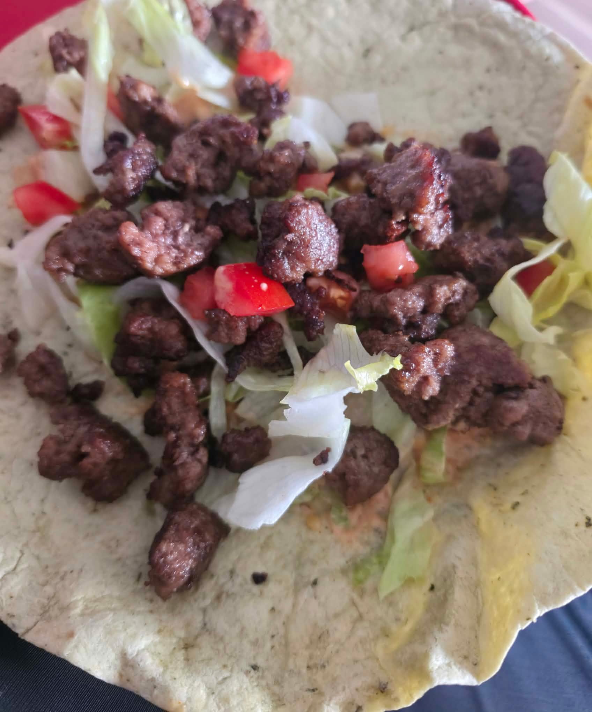
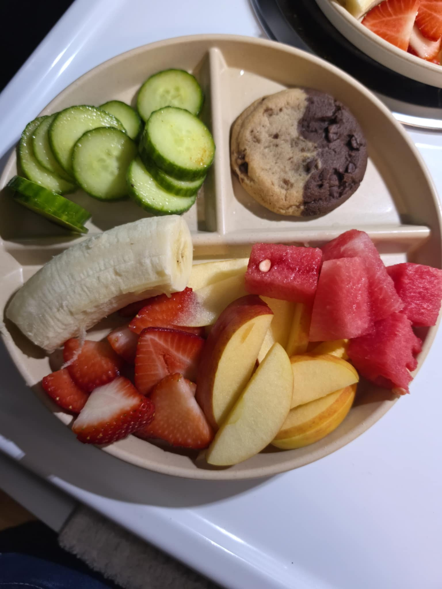

Passions and Pastimes
Memories in Alaska
Natasha's time in Alaska helped her discover how much she enjoys exploring new places and experiencing different surroundings. The experience strengthened her interest in discovering more of the world, including places such as Italy, France, and Ireland, where she hopes to explore different cultures and learn along the way.

A Homemade Favorite
Natasha enjoys meal prepping and experimenting with healthier versions of familiar foods for her family. This homemade burger wrap is one example of how she puts her own spin on a favorite meal while keeping balanced nutrition in mind. She enjoys finding new ways to prepare familiar dishes and introducing her family to different options.
Healthy Choices, Sweet Treats
Natasha enjoys finding healthier ways to satisfy her family's sweet tooth. This plate combines fresh fruit and vegetables with a small cookie to create a dessert that offers variety without making the cookie the main focus. For Natasha, experimenting with healthier options is a way to make food enjoyable while encouraging her family to try different things.
